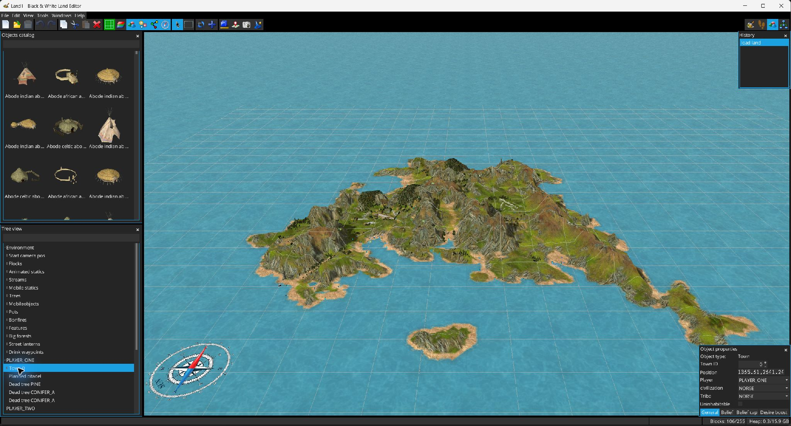

Der Modus Objektplatzierung bearbeitet LHX-Anweisungen zur Objekterzeugung über einen 3D-Arbeitsablauf und hält das Skript dabei synchron.

Wechseln Sie zu  Objekte platzieren. Das Katalogfenster zeigt durchsuchbare Modellvorschauen aus den Spielressourcen. Ziehen Sie ein Element aus dem Katalog auf gültiges Gelände; ungültige oder außerhalb liegende Ablagepositionen werden hervorgehoben und abgelehnt.
Objekte platzieren. Das Katalogfenster zeigt durchsuchbare Modellvorschauen aus den Spielressourcen. Ziehen Sie ein Element aus dem Katalog auf gültiges Gelände; ungültige oder außerhalb liegende Ablagepositionen werden hervorgehoben und abgelehnt.
Neue Anweisungen erhalten bei Bedarf Objekttyp, Position, Alter und eine neue ID. Abhängig vom Befehl versucht der Editor außerdem Beziehungen abzuleiten:
Das Zeigerwerkzeug  wählt Objekte aus. Ctrl-Klick schaltet die Auswahl eines Objekts um. Ziehen verschiebt die ausgewählten Objekte als Gruppe; beginnt das Ziehen bei gedrückter Ctrl-Taste, werden die ausgewählten Anweisungen zuerst dupliziert.
wählt Objekte aus. Ctrl-Klick schaltet die Auswahl eines Objekts um. Ziehen verschiebt die ausgewählten Objekte als Gruppe; beginnt das Ziehen bei gedrückter Ctrl-Taste, werden die ausgewählten Anweisungen zuerst dupliziert.
Das polygonale Auswahlwerkzeug unterstützt Neu/Hinzufügen/Subtrahieren/Schnittmenge. Ein Rechtsklick auf Objekte öffnet Befehle zum Verfeinern/Erweitern der Auswahl, zum Auswählen von Eltern/Geschwistern/Kindern/Nachkommen, zum Anzeigen eines Objekts in der LHX-Baumansicht sowie zum Kopieren, Ausschneiden oder Löschen.
Das Fenster Objekteigenschaften wird aus dem Argumentschema des ausgewählten Befehls erzeugt. Es unterstützt Koordinatenfelder, Gleitkomma-/Ganzzahlen, Boolesche Werte, Zeichenketten und aufgezählte Argumentoptionen. Einschränkungen für Position/Drehung/Skalierung/Alter werden an den Befehl angepasst. Doppelte IDs werden markiert.
Spezialisierte Bereiche stehen für Stadtglauben, Glaubensgrenzen und Wunschboni zur Verfügung; Behausungen zeigen die Anzahl von Erwachsenen/Kindern und relevante Objektflags wie geplant/tot/unbewohnbar, sofern unterstützt.
Der Baum bietet eine durchsuchbare Hierarchie gerenderter LHX-Objekte und folgt der Auswahl in der 3D-Ansicht. Eltern-/Kind-Verknüpfungen entsprechen den Beziehungen, die durch die Verknüpfungsüberlagerung dargestellt werden.